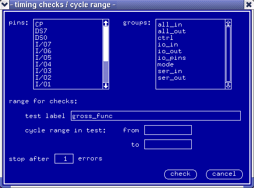

Checking for the Combinations used in the Selected Test
The function lets you check out the device cycle sequences occurring in the selected test for the selected pins or pin groups. You can check the combinations occurring:
- either in the whole test;
- or in the selected vector range.
The check is executed for the current waveform set.
To run the check proceed as follows:
- In the Check pulldown menu select the timing Vec... option.
The dialog box timing checks / cycle range appears, see the figure below.
- Type the label of the test you want to check out into the test label entry field.
- If you wish to check out only a portion of the test, type the cycle range into the from / to entry fields.
- In the entry field labeled stop after type the number of errors after which the check should stop.
- Click check.
The system runs the check taking the pins and/or pin groups sequentially, and displays a report in the report window.
